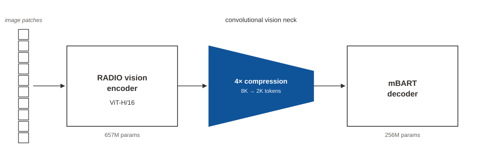

Paper Notes: Nemotron Parse 1.1
last updated 2026-05-27
Tasks
Nemotron Parse 1.1 does the following tasks:
- OCR
- Markdown processing
- Table parsing (into TeX – not markdown/HTML!)
- Reading order
- Formula parsing
The output format is a custom XML:
<x_0><y_0>(content)<x_1><y_1><class_CLS>
This xml is output in reading order, with (x_0, y_0) being the top-left of the bounding box and (x_1, y_1) being the bottom-right. This is structurally similar to the Kosmos-2.5 format, though not quite the same.
The tasks are differentiated by a set of special prompt tokens:
<output_{markdown,plain,no_text}>
<{predict,no}_bbox>
<{predict,no}_classes>
So, if you wanted plain text outputs with bounding boxes and classes, your prompt would be:
<output_plain><predict_bbox><predict_classes>
Architecture

All of this in an 885M param VLM, with a 256M language encoder (mBART) and a >600M param ViT for vision encoding. It’s a pretty bottom-heavy model, unlike a lot of other OCR VLMs. The ViT, based on RADIO, is a ViT-H/16, meaning images are patched into 16x16 patches, and are handled in native resolution.
Small patches at native resolution results in a blowup in token usage. For instance, a 1024x1024 image chunked into 16x16 patches results in 4096 tokens used: \((1024/16)^2 = 4096\). Nemotron Parse accounts for this by using a convolutional neck that downsamples the tokens by 4, so the 1024x1024 image would only use 1024 tokens.
They release an additional Token Compression (TC) model that reduces the number of image tokens by an additional 4x, similar to Deepseek-OCR’s MLP mixer.
There are no positional encodings used, with the assumption that these are actually bad for OCR tasks, where you must pay careful attention to the image.
They also release a bundled multitoken prediction head for fast inference.
Data
They release the Nemotron-VLM-v2 dataset, which contains some of the data used to train this model. The overall data distribution is:
| Dataset | Pages |
|---|---|
| Multilingual arXiv | 8.3M |
| SynthTabNet | 480k |
| DocLayNet | 56k |
| CommonCrawl | 255k |
| Synth Data | 3.5M |
| Multilingual Synth Wiki Data | 9.5M |
| PubTabs | 585k |
| FinTabNet | 91.5k |
| TabRecSet | 382k |